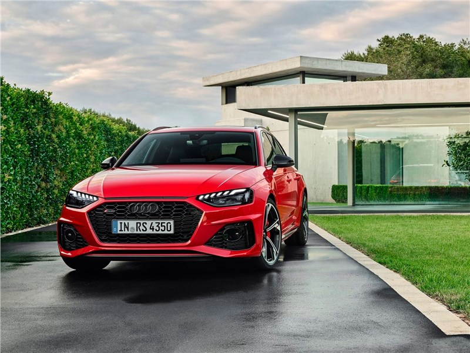
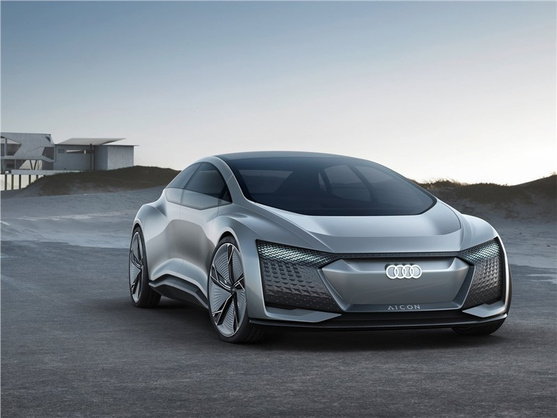
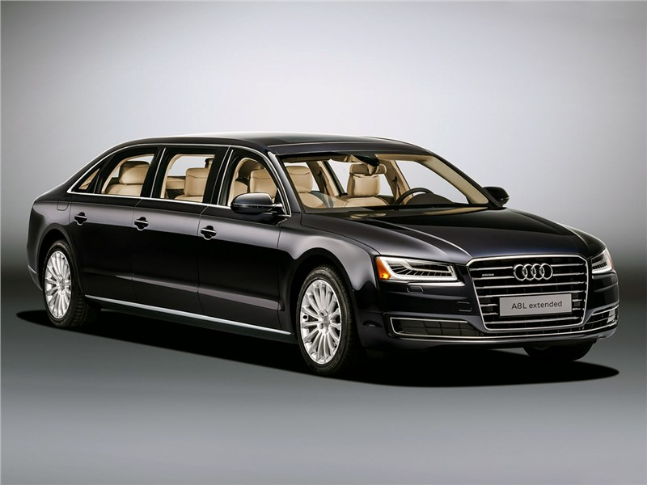
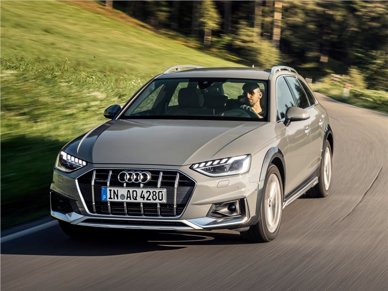

О Audi
Компания Audi является немецким производителем автомобилей, которые сочетают в себе изысканный дизайн и современные технологии. Её штаб-квартира расположена в городе Ингольдштадте. В 1909 году начинается история этого автомобильного гиганта, когда
Август Хорьх организовал фирму по производству машин. В 1910 году был выпушен первый автомобиль компании Audi-A. В 1965 году концерн Volkswagen выкупил контрольный пакет акций Audi. Одной из масштабных разработок специалистов фирмы стал фирменный
полный привод, которым в 1982 году оснастили Audi 80 quattro. 90-е года для компании были наполнены технологическими новинками. Для серийного автомобиля A8 сделали алюминиевый корпус, для A6 создали вариатор с металлическим ремнем. На сегодняшний
день компания Audi выпускает целую гамму автомобилей различных классов.

Автомобили среднего класса
Автомобили бизнес-класса
Представительский класс
- Audi V8 (D1/Typ 4C) (1989—1994 гг.)
- Audi A8 (D2/Typ 4D) (1994—2002 гг.)
- Audi A8 (D3/Typ 4E) (2002—2010 гг.)
- Audi A8 (D4/Typ 4H) (2010 г. — настоящее время)
- Audi A7 (Typ 4G) (2010 г. — настоящее время)
Купе
Кабриолеты
Кроссоверы
Модели «S», «RS» и «R8»
